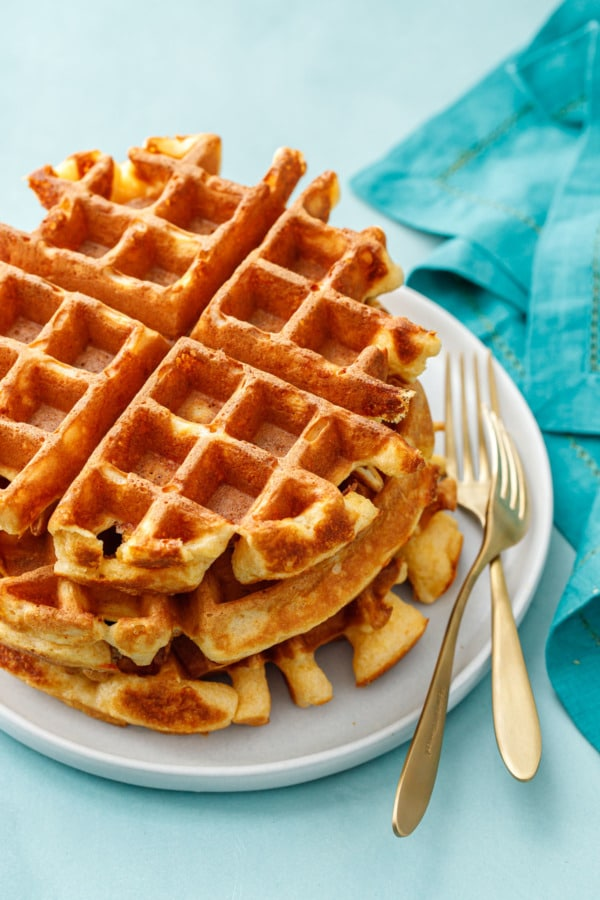

Avocado salade met feta

Ingredienten
- 100 gr witte basterdsuiker
- 1 zakje vanillesuiker
- Snuf zout
- 2 eiren
- 0.5 zakje bakpoeder
- 225 gr bloem
- 175 gr gesmolten mararine of boter
- 250 ml lauwe melk
- Olijfolie of boter om in te vetten
Bereiding
- Mix de eieren in een kom 2 minuutjes luchtig met een mixer of garde. Voeg de basterdsuiker, zout en vanillesuiker toe en mix 2 minuutjes mee. Doe de gesmolten boter erbij samen met de melk en mix kort mee tot een egaal mengsel.
- Voeg dan de bloem toe met het bakpoeder en meng er kort doorheen tot een mooi beslag. Laat het beslag een paar minuten rusten en verwarm het wafelijzer. Vet het wafelijzer in en schep ongeveer een sauslepel van het beslag in het midden van de vorm. Doe dicht en bak de wafels in ca. 3 a 4 minuten gaar. Lekker met poedersuiker, slagroom en of andere toppings.